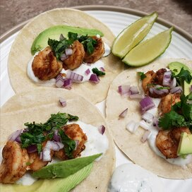

Shrimp Tacos

Description
It's Taco Tuesday...or whatever day it is! Enjoy these delicious, healthy tacos.
Ingredients
Makes 8 tacos
- 8 medium tortillas
- 1 lb medium shrimp
- 1 Tbsp canola oil
- 1 tsp cumin
- 1 tsp chili powder
- 1 tsp salt
- 1/4 tsp red pepper flakes
- juice from 1 lime
- for toppings: sliced red cabbage, avocado, sour cream, shredded cheese
Steps
- Preheat oven to 425 degrees.
- Toss shrimp with oil, cumin, chili powder, salt, and red pepper flakes.
- Spread shrimp in a single layer on a baking sheet, and bake for 6 minutes, flipping halfway.
- Wrap tortillas in foil and warm in oven for 5 minutes.
- Toss baked shrimp with lime juice.
- Put 2-3 shrimp in each taco, fill with your desired toppings, and fold in half.